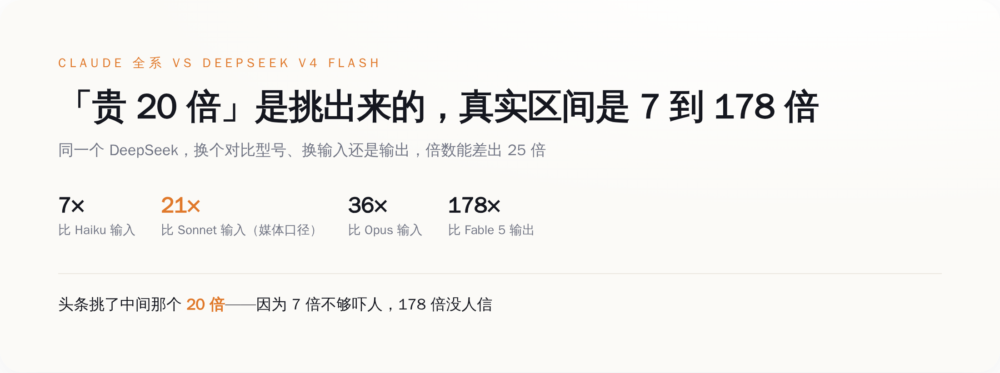
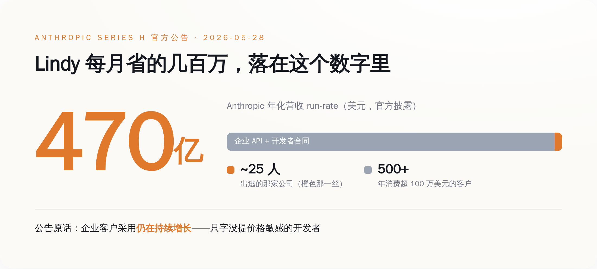
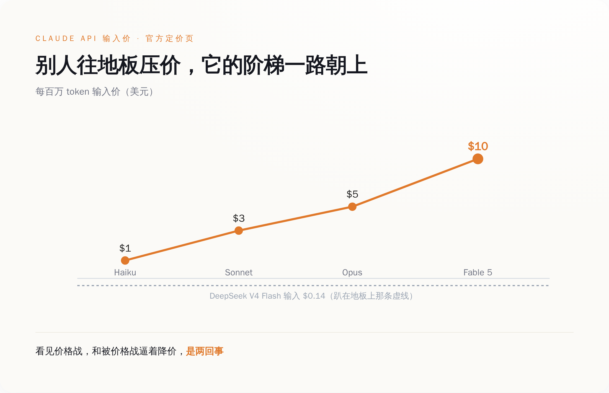
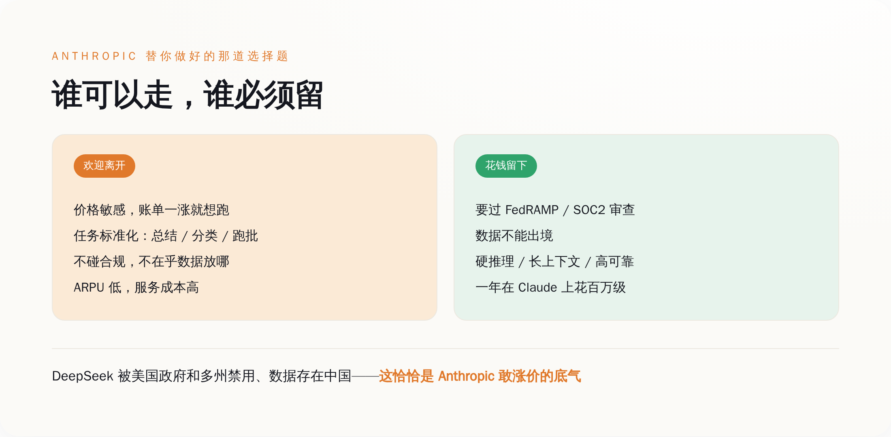

"贵 20 倍"这个数字，是怎么被算出来的
先说那个满天飞的「20 倍」。
我不引用任何分析师，也不引用任何「业内人士」。我只用两个东西：Anthropic 挂在官网的定价页，和 DeepSeek 公布的 V4 价格。一手的，谁都能去点开看。
Claude 这边，一共四档，从便宜到贵：Haiku 4.5（输入 1 美元 / 输出 5 美元），Sonnet 4.6（3 / 15），Opus 4.8（5 / 25），Fable 5（10 / 50），单位都是每百万 token。
DeepSeek 这边，最便宜的 V4 Flash，输入 0.14 美元，输出 0.28 美元。
现在我们来做小学算术。同样是输入价，你拿 DeepSeek 去比谁？
比 Haiku，1 除以 0.14，是 7 倍。
比 Sonnet，是 21 倍。
比 Opus，是 36 倍。
比 Fable 5，是 71 倍。
如果你比的是输出价，Fable 5 的 50 除以 0.28，是 178 倍。

所以「20 倍」是哪来的？是拿 Sonnet 的输入价去比的，21 倍，四舍五入喊成 20。
（严谨一点：Lindy 到底切去跑哪一档，公开报道里没说清楚，所以这个 20 倍是媒体最流通的口径，不是 Lindy 的真实账单。但这恰恰是重点——连被比的是哪个型号都没定下来，这个数就敢满天飞。）
挑这个数，不是因为它最真实，是因为它最顺口（笑）。7 倍说出去没人转，178 倍说出去没人信，21 倍刚刚好，又唬人又像那么回事。
更别说，这个对比里还藏了一刀没人替你算：缓存。
简单说，同一段 prompt 你反复发，Claude 第二次之后自动给你打折。Opus 的输入价缓存命中后直接砍到 0.5 美元，再开个批处理又是五折。真实账单里，很多场景的差距，远没有定价单上那么吓人。
「便宜 20 倍」这句话本身没错。错的是，它假装这是一个确定的数字，而不是一道你可以算出任意答案的应用题。
那个出逃的 25 人公司，Anthropic 根本没在看
回到 Lindy。
它的故事是真的，CEO 说省几百万也是真的。一个 25 人的创业公司，AI 调用成本能压到每月省几百万美元，对它来说这确实是生死。我完全理解他为什么切。
问题是，Anthropic 在不在乎。
5 月 28 日，Anthropic 发了一份官方公告，宣布完成 Series H 融资：拿了 650 亿美元，估值 9650 亿美元，逼近一万亿。同一份公告里，它顺手披露了一个数字——年化营收 run-rate 这个月初刚跨过 470 亿美元。
470 亿是什么概念。Lindy 那种公司，省到极致，一年也就给 Anthropic 贡献几千万美元的账单，还是往多了说。它整个切走，落到 470 亿的盘子里，是小数点后面的事。

这份公告我反复读了几遍，最有意思的是它没说什么。
它说企业客户采用「持续增长」，说有 30 万家企业客户，说有 500 多家客户一年在它身上花超过 100 万美元。它通篇在炫耀的，是越来越多的大客户、越来越贵的合同。
它一个字都没提价格敏感的开发者。没提要不要降价，没提怎么留住中小客户，没提 DeepSeek。
一家公司在融资公告里着重夸什么，约等于它想要什么。Anthropic 想要的，写得明明白白——是 500 家一年花百万的金主，不是 5000 家一个月省百万的 Lindy。
Lindy 觉得自己在「抛弃 Claude」。但在 Anthropic 的财务报表里，这种抛弃连一个像样的扰动都算不上。
价格战打到最凶的时候，它把旗舰涨了一倍
现在我们把两件事并在一起看。
一边，是 DeepSeek 把价格压到 Claude 的几十分之一，是 Lindy 这样的公司在出逃，是全网在喊「再不降价就完了」。
另一边，是 Anthropic 推出 Fable 5，定价每百万 token 输入 10 美元、输出 50 美元，是 Opus 的整整两倍。它全系四档价格，在价格战最凶的这半年里，没有任何一档跟着 DeepSeek 往下调过。

正常逻辑里，一家被低价对手围攻的公司，要么降价跟，要么哭着喊护城河。Anthropic 两样都没干。它在涨价。
有人会说，Fable 5 涨价是因为它更强、训练成本更高，这是正常的旗舰定价，你别过度解读。
这话单看 Fable 5 一个点，成立。但你把方向连起来看就不成立了：在价格被打到地板的半年里，Anthropic 全系没有一档下调，新旗舰还翻倍，融资公告里通篇夸的是大客户和百万合同——这不是某一个孤立的定价动作，这是一个一以贯之的方向。
这个方向只有一个解释：它压根没想在便宜这个维度上跟 DeepSeek 打。
你以为它在价格战里挨打，其实它根本没进这个战场。
要是它真被打疼了，账面会先露馅——大客户掉单、合同砍价、营收增速下台阶。可它公告里摆出来的数是反的：470 亿还在涨，500 家百万级大客户还在加。一个真在失血的公司，体检报告不长这样。
它站在另一个战场。那个战场里，贵不是缺点，是身份。
被「欢迎离开」的客户，和被留下的客户
所以所谓「出逃」，逃的到底是什么人。
逃的是价格敏感的人，是拿模型跑总结、跑分类、跑标准化批处理的人，是任务简单到 Haiku 都嫌杀鸡用牛刀、账单一涨就想换供应商的人。
这批人走了，对 Anthropic 来说不是失血，是体检。它们贡献的营收薄、要求的服务多、对价格还最敏感——在任何一个 SaaS 公司的内部测算里，这都是 ARPU 最低、最该被「优化」掉的那一档客户。它们走了，Anthropic 的客户结构反而更干净，人均更值钱。
那留下来的是谁。

留下来的，是要过 FedRAMP、过 SOC2 审查的企业，是数据一个字节都不能出境的金融和医疗，是任务硬到便宜模型一上就出错、宁可多花钱也要稳的团队。
对这批客户，DeepSeek 不是「便宜的选项」，是「不能用的选项」。
这不是我吹的。美国政府机构和十几个州已经明令禁止在公务设备上用 DeepSeek，它的隐私政策白纸黑字写着数据存在中国服务器，安全公司 Wiz 还扒出过它一个没加密的数据库，泄露了上百万条日志，里面有聊天记录和 API 密钥。
对一个要过合规审查的企业采购来说，这些不是减分项，是一票否决项。便宜几十倍也没用，因为这道门它根本进不来。
所以 Anthropic 的底气，从来不是「我比 DeepSeek 便宜」——它便宜不过，也不想便宜。它的底气是「我能进的那道门，DeepSeek 进不来」。在那道门后面，它想标多少价，标多少价。
一刀
把这事捋直了说。
媒体的叙事是：开发者在抛弃 Claude，Anthropic 被价格战打得快不行了，再不降价就要完。
Anthropic 自己摆出来的两张纸是：营收 470 亿还在涨，大客户 500 家还在加，新旗舰定价翻倍，全系一档没降。
这两个故事不可能同时为真。要么是 Anthropic 在用一份假公告骗投资人，要么是媒体把一家 25 人公司的账单焦虑，包装成了行业的塌方。
我赌后者。
Lindy 们省下的每月几百万，是真的；但它落进 470 亿的盘子里，连个响都听不见，也是真的。这个判断不是耍嘴皮子的事后诸葛，它能被证伪：要是接下来半年，Anthropic 真把 Sonnet 砍到一美元以下去硬刚 DeepSeek，那就是我看走眼了，它确实是被逼降价的。在那之前，账摆在这儿。
下次你再看到「某某出逃 DeepSeek 省了多少钱」的标题，先别急着替 Anthropic 着急。先低头算算自己：你是拿 Opus 在跑 Haiku 就能干的活，然后回头怪模型贵；还是你真的卡在了便宜模型过不去的那道合规线、那道任务难度线上。
如果是前者，你早该走了，Anthropic 巴不得你走。如果是后者，你压根没得选，跑去 DeepSeek 才是真的拿业务赌命。
你以为你在抛弃它。其实从它官网那张定价页开始，它就在给你发好人卡了。